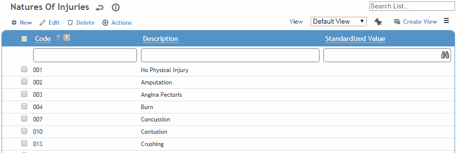
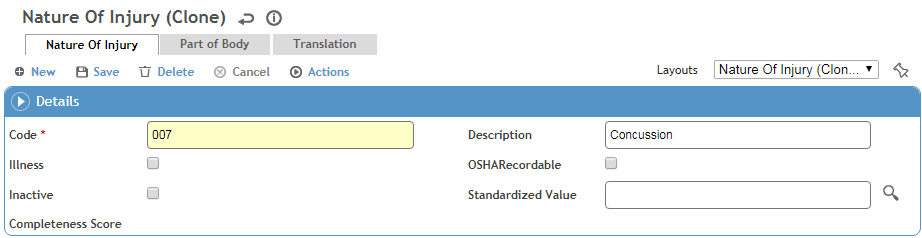

This table is used by several modules to identify types of injuries or illnesses.
To filter the list of records, enter a few characters in one or more of the fields at the top followed by an asterisk, then press Enter.

Click a link to edit, or click New.

Enter a Code and Description.
Indicate if this injury is actually an Illness. When this code is selected in the Clinic Visits or Incident module, the Illness checkbox is selected and you are prompted to select the occupational illness type.
If this code is selected as the primary nature of injury, the Case is marked automatically as an Injury or Illness as applicable.
Indicate if this injury is OSHA Recordable.
Optionally, select the Standardized Value (from the NatureofInjuryStandardizedValue look-up table) to categorize each record. This value will be used by the predictive Analytics module to compare your data to that of other organizations and determine your relative performance.
Click Save.